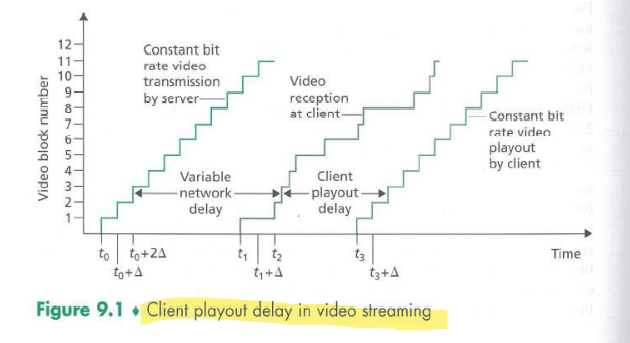
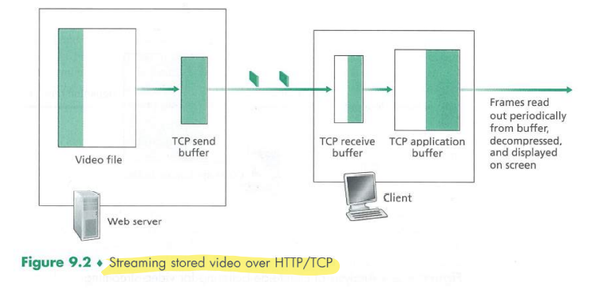
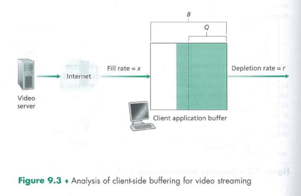

Streaming Stored Video
Streaming Stored Video
Streaming video systems can be classified into three categores: UDP streaming, HTTP streaming and adaptive HTTP streaming.
Common characteristic: extensive use of client-side application buffering to mitigate the effects of varying end-to-end delay.

UDP Streaming
Because UDP does not employ a congestion-control mechanism, the server can push packets into the network at the consumption rate of the video without the rate-control restrictions of TCP.
However, due to varying amount of bandwidth, constant-rate UDP streaming can fail to provide continous playout. It also requires a media control server, such as an RTSP server to process interactivity requests and to track client state.
Many firewalls are configured to block UDP traffic.
HTTP Streaming
The client establishes a TCP connection and issues an HTTP GET request for the video url.
Buffering and prefetching mitagate the delays of TCP's congestion control mechanisms.
Prefetching Video
The client can attempt to download the video at a rate higher than the consumption rate, thereby prefetching video frames.
Client Application Buffer and TCP Buffers

When the user pauses the video, bits are not removed from the client application buffer, event though bits continue to enter the buffer from the server - and may become full. This causes the TCP buffers to become full, forcing the server to reduce its rate. A full client application buffer indireclty imposes a limit on the rate that video can be sent from server to client when streaming over HTTP.
Analysis of Video Streaming

The initial buffering delay .
When the available rate in the network is less than the video rate, playout will alternate between periods of continous playout and periods of freezing.
Early Termination and Repositioning the Video
The HTTP byte-range header in the HTTP GET request message specifies the range of bytes the client currently wants to retrieve from the desired video. This is useful for user repositioning.
There is significant wasted bandwidth in the Internet due to early termination, which can be quite costly.